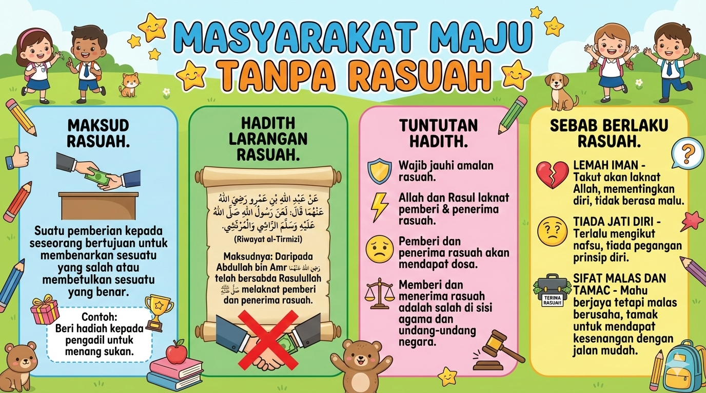
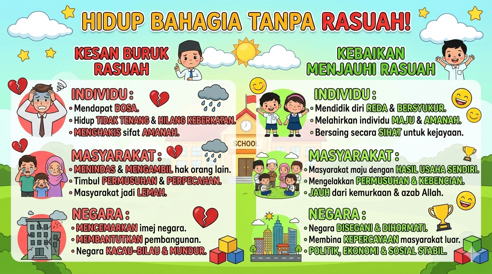

Unit 1
Hindari Rasuah
Membenci rasuah amalan mulia.
Nota Ringkas

Halaman 1: Maksud Rasuah, Dalil Pengharaman, Tuntutan Hadith & Sebab Berlaku Rasuah

Halaman 2: Kesan Buruk Rasuah & Kebaikan Menjauhi Rasuah
Uji Minda
Soalan 1 / 15
KBAT
Soalan akan muncul di sini...
Tahniah!
Anda telah menamatkan kuiz ini.
Markah Anda
0%
Hebat!